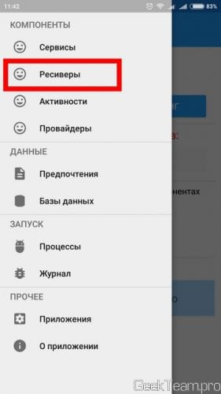
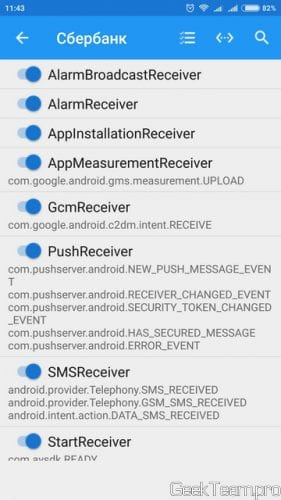
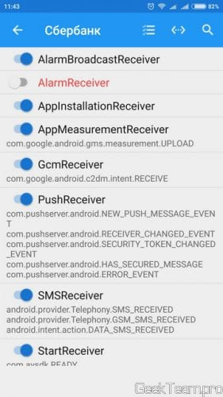
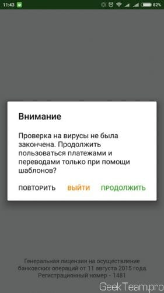
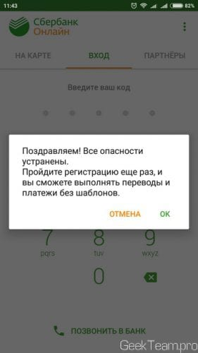
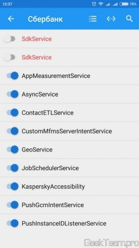

Устанавливаем из Play Маркета приложение по названием My Android Tools и запускаем его.
В открывшемся меню выбираем «Ресиверы»

Ищем в списке приложений Сбербанк и открываем его.
Находим ресивер AlarmReceiver и выключаем его. Если не переключается, то заходим в ваш Root-менеджер (SuperSU или встроенный) и предоставляем права для MyAndroidTools.
 
Закрываем приложение и переходим обратно в Сбербанк. Видим следующее окно, жмем «Продолжить» (в дальнейшем постоянно жмите только продолжить).

Система сообщит что уже все в порядке и нужно заново зарегистрировать приложение в системе, жмём ОК.

Вас перекинет на первую страницу приложения, жмём кнопку «Войти в Сбербанк Онлайн» и входим в систему. После входа все будет хорошо.
При запуске приложения всегда жмите «Продолжить» и проблем не будет. А как бонус, давайте ограничим фоновую активность приложения, чтобы оно не ело нашу драгоценную батарею. Снова открываем My Android Tools, но теперь выбираем «Сервисы» → «Сбербанк«. И отключаем сервисы SdkSevice.

Вроде всё.
Если сособ не сработал, можно воспользоваться следующей последовательностью действий:
1. удали сбербанк
2. установи это приложение (ничего не выключай пока)
3. установи сбербанк
4. зарегайся в сбере (выскочит типо неоригинальная прошивка и т.д. , продолжай вводи идентификатор)
5. в сбере включены только шаблоны
6. сворачиваешь сбербанк (не закрывай) открываешь это приложение параллельно, выполняешь отключение функции как описано выше
7. снова открываешь сбер и должно выскочить типо все норм, пройдите регистрацию снова.
8. проходишь регистрацию заново и включаются все функции